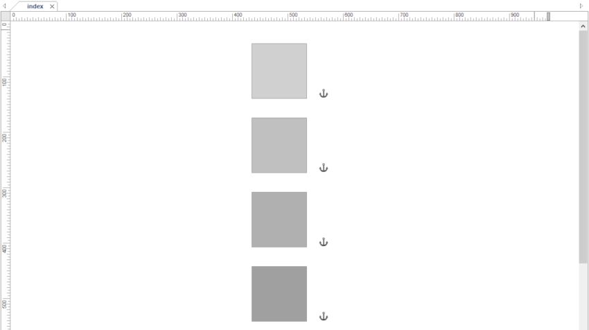
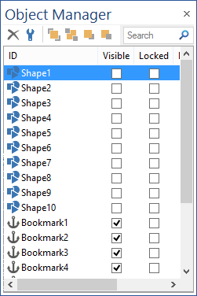
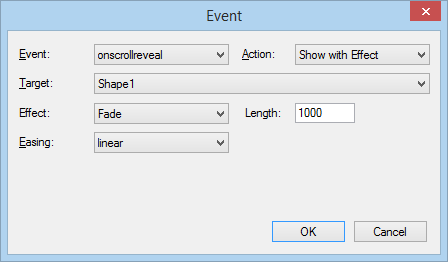

How to reveal objects on scroll with bookmark events?
On-scroll animations are a popular effect in modern websites. HTML elements remain hidden until the user scrolls the page, whereupon the element reveals itself with an animation that makes the website look dynamic.
This tutorial explains how reveal objects on scrolling by using bookmark events. The bookmark object supports 3 events that make it possible to trigger actions based on the scroll position of the page:
onscrollreveal
Fires when the bookmark is completely visible in the view port of the browser.
onscrollrevealpartial
Fires when the bookmark is partially visible in the view port of the browser.
onscrollhide
Fires when the bookmark is scrolled out of the browser's view port.
On-scroll animations are a popular effect in modern websites. HTML elements remain hidden until the user scrolls the page, whereupon the element reveals itself with an animation that makes the website look dynamic.
This tutorial explains how reveal objects on scrolling by using bookmark events. The bookmark object supports 3 events that make it possible to trigger actions based on the scroll position of the page:
onscrollreveal
Fires when the bookmark is completely visible in the view port of the browser.
onscrollrevealpartial
Fires when the bookmark is partially visible in the view port of the browser.
onscrollhide
Fires when the bookmark is scrolled out of the browser's view port.
Step 2
We want to reveal an object when it becomes visible in the viewport, so we add a bookmark next to that object. Either make the bookmark the same size as the object or place it at the bottom of the object so the event will be triggered only when the entire object is in the viewport.
We want to reveal an object when it becomes visible in the viewport, so we add a bookmark next to that object. Either make the bookmark the same size as the object or place it at the bottom of the object so the event will be triggered only when the entire object is in the viewport.
CSS3 animations
This feature really becomes interesting when using CSS3 animations. Then we can objects make 'fly in' or create other cool effects.
To learn how to use trigger CSS animations with events please read this tutorial:
https://www.wysiwygwebbuilder.tk/animation_events.html
Here's a demonstration with CSS3 animations:
https://www.wysiwygwebbuilder.tk/support/bookmarkevents/animations.html
You can download the example project here:
https://www.wysiwygwebbuilder.tk/support/bookmarkevents/bookmarkevents.zip
This feature really becomes interesting when using CSS3 animations. Then we can objects make 'fly in' or create other cool effects.
To learn how to use trigger CSS animations with events please read this tutorial:
https://www.wysiwygwebbuilder.tk/animation_events.html
Here's a demonstration with CSS3 animations:
https://www.wysiwygwebbuilder.tk/support/bookmarkevents/animations.html
You can download the example project here:
https://www.wysiwygwebbuilder.tk/support/bookmarkevents/bookmarkevents.zip
Note:
The number of visible objects may be different for each user, depending on the size of their device and/or browser window.
So some users may have a scroll bar while other users will see the entire content at once (depending on the length of the page)
The number of visible objects may be different for each user, depending on the size of their device and/or browser window.
So some users may have a scroll bar while other users will see the entire content at once (depending on the length of the page)
Step 1
Create a page with enough content so the browser will add a (vertical) scrollbar. For this tutorial I have added 10 vertical aligned shapes.
Create a page with enough content so the browser will add a (vertical) scrollbar. For this tutorial I have added 10 vertical aligned shapes.
Step 3
Now we can hide the object to make it initially visible: right click the object and select 'Hide' or use the Object Manager to hide the object.
Now we can hide the object to make it initially visible: right click the object and select 'Hide' or use the Object Manager to hide the object.
Step 4
Open the properties of the bookmark and go to 'events'. Add a 'onscrollreveal' event, set the action to 'Show with Effect', use 'Fade' and select the ID of the object you want to reveal.
Open the properties of the bookmark and go to 'events'. Add a 'onscrollreveal' event, set the action to 'Show with Effect', use 'Fade' and select the ID of the object you want to reveal.
Step 5
Preview or Publish the page. The object will fade into view when you scroll the page to the bookmark position.
https://www.wysiwygwebbuilder.tk/support/bookmarkevents/index.html
Preview or Publish the page. The object will fade into view when you scroll the page to the bookmark position.
https://www.wysiwygwebbuilder.tk/support/bookmarkevents/index.html


